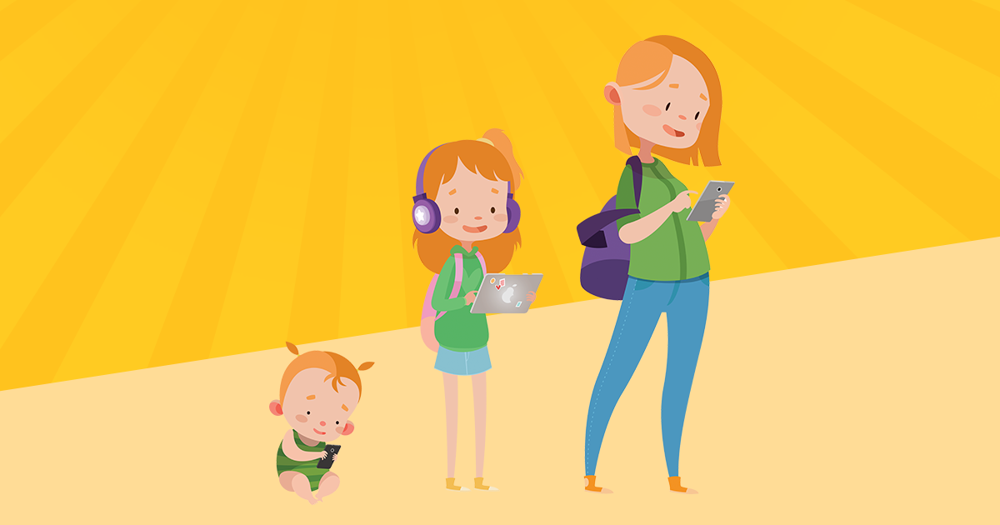
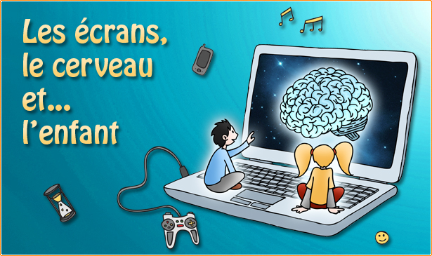
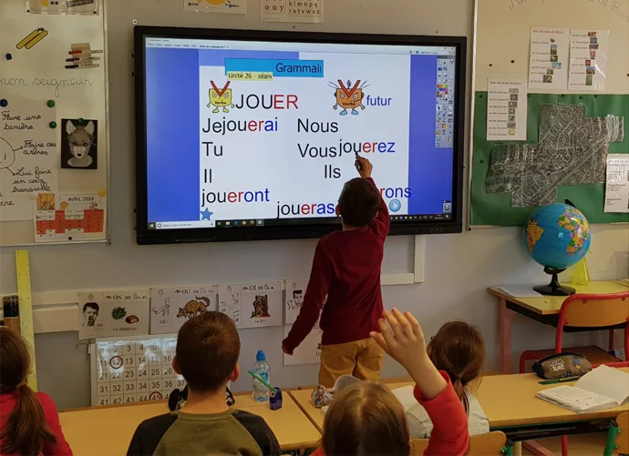
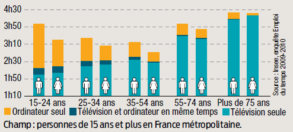
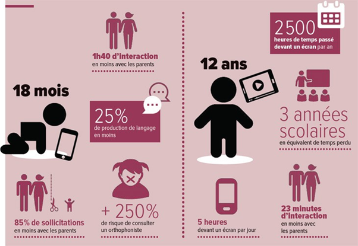

Introduction
De nos jours, les écrans font partie intégralement de nos vies et de notre façon de vivre. Les écrans ont intégré notre façon de vivre à un point qu’ils sont devenus indispensables au développement professionnel. Cette utilisation des écrans a donc touché les enfants qui savent aujourd’hui, en grande majorité, utiliser les écrans interactifs. Nous allons aborder sur cette page abordée les côtés négatifs et positifs lier aux écrans interactifs et à leurs expositions dès le plus jeune âge aux enfants notamment.
- - On appellera dans notre sujet d’étude un enfant une personne âgé de 3 à 15ans.
- - On appellera écran interactif, un appareil possédant un écran tactile ou non, en permettant d’interagir avec un humain.
- 
- 
Diverses avantages des écrans intéractifs pour enfant
Pour commencer la liste des effets positifs, malgré le fait qu’ils soient mineurs, ils se montrent efficaces dans le développement socio-cognitif de l’enfant. Sur les réseaux sociaux ou encore les sites de streaming (légaux), les enfants s’inspirent de tout ce qu’ils voient au quotidien. Les influenceurs peuvent influencer la jeunesse à se comporter de façon bienfaisante, et à être socialement attirant tout en développant leur humour, leur centre d’intérêt et leur goût en fonction des tendances actuelles (Exemple le Z-event, des influenceurs comme tiboInshape...). Afin de comprendre plus amplement ces derniers propos, une tendance représente la montée en puissance d'un sujet dans les conversations des communautés. Malgré tout, cet effet reste à double tranchant, il peut vite devenir négatif si l’enfant suit des personnes mal intentionnées où adoptent les manières du côté malveillant des réseaux. [4],[5] Le regroupement des divertissements mit sur le web peuvent créer des liens entre les enfants. En soit si l’utilisation des réseaux sociaux par l’enfant est contrôlée alors le mettre au contact des divertissements d’aujourd’hui peut être très bénéfique et lui apporter un bagage de sujet pour communiquer avec autrui et donc améliorer son développement socio-cognitif. [4],[5]
Certaines plateformes de jeux (ex : Switch, portable, Ps5...) permettent de jouer à des jeux qui sont très éducatifs et moralisateurs (ex : the last of us, edit finch, adibou...). Ils permettent aux enfants de jouer et de communiquer entre eux lorsqu’ils ne peuvent pas sortir ou lorsqu’ils n’ont rien à faire, cela conserve et développe leurs liens sociaux, en leur permettant de partager des moments avec leurs amis.
En conclusion, les écrans disposent de beaucoup de points positifs mais si ils ne sont pas bien contrôlés ils peuvent vite se transformer en point négatif qui peuvent nuire au développement sociocognitif des enfants en exposition directe. Malgré tout les points positifs cités et leur risque de devenir négatifs, certains effets sur le développement socio-cognitif sont négatifs et posent de nombreux problèmes. Ils influent sur l’aspect social et éducatif engendrant des problèmes de santé intellectuelles, neurologiques et des défaillances comportementales.
- 
Points négatifs
1- Effets cognitifs sur les Nourrissons
Au cours des trois dernières décennies, le nombre de programmes télé destinés aux bébés a augmenté (TFOU, comptines, etc.), ce qui fait que les bébés passent plus de temps devant les écrans. Une étude de 2009 a rapporté que l'âge moyen de la première exposition à la télévision était de 4 mois. Une autre étude a montré qu'entre 1997 et 2014, le temps passé devant un écran chez les enfants âgés de 0 à 2 ans avait doublé. Les écrans peuvent effectivement interférer avec le sommeil d'un enfant, puis il peut devenir hyperactif (étude dont le Dr J. Mohmed nous a parlé dans une interview).[5] De plus, lorsqu'un enfant de 2 ans est derrière le dessin animé, cela réduit le temps passé à interagir avec les autres membres de la famille. Ensuite, il jouera moins avec papa et maman, lira moins et se disputera moins avec ses frères et sœurs. Bref, tout ce qui aide le cerveau à ce développer correctement va être en quelque sorte volé par ce temps d'écran. Une grande étude récente de la population française a montré que 84 % des enfants de 2 ans regardent la télévision au moins une fois par semaine et 68 % la regardent une fois par jour. Les parents disent que les bébés âgés de 2 à 24 mois regardent en moyenne 40 minutes de télévision par jour, et seulement la moitié de ce visionnement est éducatif.
2- Effet cognitif sur les Adolescents
Passons maintenant au cas des adolescents :
Chez les adolescents de nos jours, les écrans sont devenus une source principale de distraction. En effet Les 3-17 ans passent en moyenne trois heures par jour devant les écrans, selon des études françaises. Ce temps dépasse même sept heures pour 23% des 15-17 ans ce qui est complétement disproportionné. De plus la crise sanitaire n’a malheureusement pas aidé à réduire le temps d’écrans des adolescents et l’a au contraire décuplé.
Il y’a une étude menée aux États-Unis qui montrent que les écrans pourraient réellement modifier le cerveau des enfants. [12] Les premiers résultats de cette étude menée à l'aide d'imagerie par résonance magnétique (IRM) montrent des tracés différents dans les cerveaux des enfants Utilisant des écrans en tout genre plus de 7 heures par jour. Les images montrent un amincissement prématuré du cortex, l'écorce cérébrale qui traite les informations envoyées au cerveau par les cinq sens. C'est un point que nous verrons dans une autre partie traitant “les réseaux sociaux” notamment avec TikTok.
- 
3 – Troubles d’attention et sociabilité
Actuellement, les écrans sont une source majeure de problèmes de comportement comme le TDAH et les sautes d'humeur. Au cours de nos recherches, nous avons pu avoir une discussion avec un enseignant du secondaire, M. Adil Berrag, qui nous a avoué que tous ses élèves utilisent des smartphones ou n'importe quel écran et il a observé de multiples troubles de l'attention chez eux jusqu'à ce qu'il ne puisse pas se concentrer sur l'exercice. En plus des troubles émotionnels, les enfants souffrent souvent de troubles du langage par manque d'entraînement. Sans communication, ils ne peuvent pas développer leur vocabulaire et leur capacité d'écoute et de communication. Une étude montre que certains enfants L'exposition à trop d'écrans ne permet pas de tenir une conversation ; leurs yeux ne se concentrent pas, ils arrêtent simplement de répondre ou changent brusquement de sujet. Leur durée d'attention n'est pas encore suffisamment développée pour l'interaction sociale. Les enfants exposés de manière excessive aux écrans sont plus susceptibles de connaître des problèmes d'intégration sociale et professionnelle. En effet, le temps passé à travailler sur les nouvelles technologies limite le temps disponible pour les activités exploratoires nécessaires au développement cognitif, à l'autonomie et à la confiance en soi. Savoir-être, savoir-être et savoir-être ne peuvent s'acquérir sans découverte sensorielle, et le retard social peut accumuler les obstacles pour le reste de la vie d'un enfant. [13] .
- 